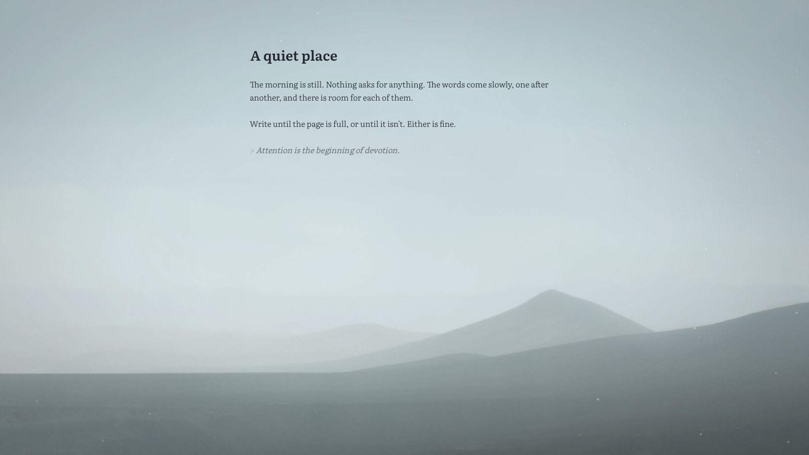

Samādhi
I wrote in OmmWriter for years, and when I moved to Linux I couldn't find anything that felt the same. So I made my own. It's a page in front of a slow moving landscape, some quiet music, the soft click of keys, and not much else. The controls fade away as soon as you start typing.

Or just the .exe if you'd rather not install anything. Windows will probably warn you it doesn't recognise the app, since I haven't paid for a signing certificate yet. Click More info, then Run anyway.
No proper Mac download yet, so for now it's one line in Terminal:
curl --proto '=https' --tlsv1.2 -LsSf https://github.com/anirudhi/samadhi/releases/latest/download/samadhi-installer.sh | shThen type samadhi once, and it'll be in Launchpad from then on. If you use Homebrew, brew install anirudhi/tap/samadhi works too.
In a terminal:
curl --proto '=https' --tlsv1.2 -LsSf https://github.com/anirudhi/samadhi/releases/latest/download/samadhi-installer.sh | shRun samadhi once and it adds itself to your app menu.